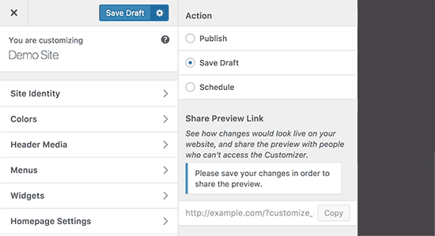
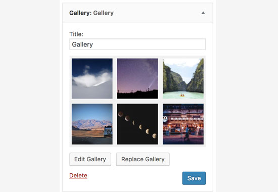
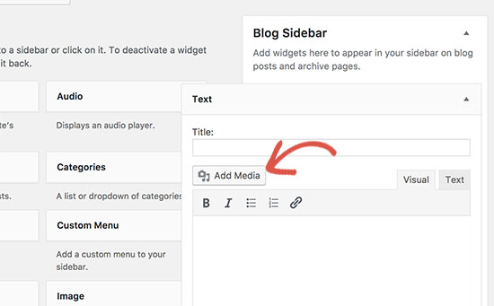
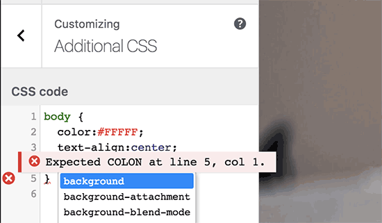
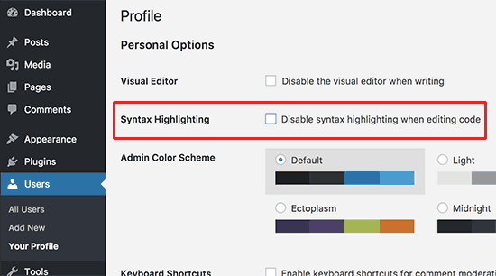

WordPress 4.9
Le novitá
Daniele Scasciafratte / @Mte90Net
Source: wordpress.org/news/2017/10/wordpress-4-9-beta-1/, www.wpbeginner.com/news/whats-coming-in-wordpress-4-9-features-and-screenshots/
Daniele Scasciafratte
- Co Founder/CTO Codeat
- Open Source Addicted
- Mozillian & Mozilla Reps & Mozilla TechSpeaker
- WordPress Core Contributor/Developer
- Project Translation Editor in WordPress Italia
- Industria Italiana Software Libero Vice Presidente
WordPress 4.9 - 14 Novembre
482 contributor, con 205 per la prima volta
Sala come Bozza sul Customizer
Customizer - Programma le modifiche con link di anteprima
Gallery widget
Aggiungi Media nel Widget di testo
Syntax Highlighting con CodeMirror
Disabilita Syntax Highlighting
L'Editor di codice mostra ora tutti i file!
Sandbox nell'Editor di codice
Oembed e shortcode abilitati nel widget di testo!
Ciaone alla libreria SWFUpload
WP-JS-Hooks
addAction( 'hook', 'vendor/plugin/function', callback, priority )
addFilter( 'hook', 'vendor/plugin/function', callback, priority )
removeAction( 'hook', 'vendor/plugin/function' )
removeFilter( 'hook', 'vendor/plugin/function' )
removeAllActions( 'hook' )
removeAllFilters( 'hook' )
doAction( 'hook', arg1, arg2, moreArgs, finalArg )
applyFilters( 'hook', content, arg1, arg2, moreArgs, finalArg )
doingAction( 'hook' )
doingFilter( 'hook' )
didAction( 'hook' )
didFilter( 'hook' )
hasAction( 'hook' )
hasFilter( 'hook' )
Migliorie interne
- get_site_by() Sostituisce get_blog_details()
- wp_unschedule_hook() Rimuovi tutti gli eventi di un hook
- wp_is_mobile - Filtro per la regex che determina se l'utente è da mobile
- username_exists - Filtro per poter creare nomi utente riservati
- pre_move_uploaded_file - Per preprocessare i file prima del caricamento
- wp_pre_insert_user_data - Per processare i nuovi utenti prima del salvataggio
- PHP 7.2 ufficialmente supportato
- Migliorata la documentazione in diversi punti
Siamo su Trello